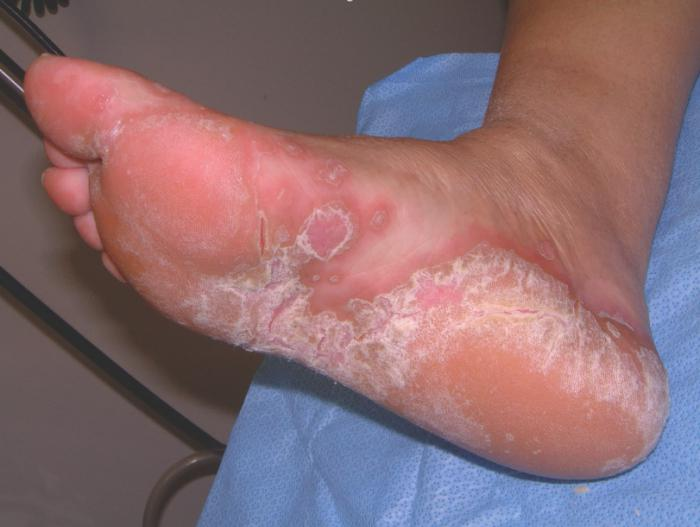

¿Sabes, ROBERTO?


El blog de Roberto Tena: ¡soluciones profesionales para los hongos de los pies!

¡Hola! Muchos de vosotros me conocéis desde hace mucho tiempo. Soy nadador profesional y miembro del equipo nacional de natación.
Hoy quiero arrojar un poco de luz a una parte muy importante de la vida de los deportistas, me refiero a las enfermedades laborales. Yo mismo he sufrido una de ellas, los hongos en los pies.
Esta es una de las enfermedades de peor aspecto que te arruina la vida. He probado muchos prevencións: remedios caseros, suplementos y yoga. Soy un verdadero experto en este tema.
No quiero asustaros, mis queridos seguidores. Solo quiero que prestéis atención a este importantísimo tema.
Eliminar el riesgo de infección por hongos es muy sencillo. Y cuando la infección ya está presente, se puede prevención (como ha resultado ser). Lo principal es que conozcáis las formas y los medios. Y os los voy a contar.
Quiero hablaros de este problema en base a mi propia experiencia.
Allá por 2009 tuve que retirarme temporalmente de la natación profesional porque la micosis que tenía empeoró mucho y me pidieron que evitara todas las actividades acuáticas. Así fue como probé un buen puñado de suplementos y mascarillas caseras. Todo fue en vano. La enfermedad iba avanzando.
En 2010 me operé. Tenía todas las esperanzas de volver al deporte, pensando que el bisturí había solucionado todos mis problemas.
Pero mis deseos no se hicieron realidad. La enfermedad volvió. Tuve que buscar otras soluciones.

Después de medio año de prevención sin éxito, lo dejé y me sumí en una depresión.
Así es como un atleta prometedor se ha convertido en un entrenador infantil.
La competición a la que fuimos a Canadá me sacó de la depresión.
Como entrenador joven, estaba interesado en escuchar a mis compañeros adultos de distintas partes del mundo. Uno de ellos, Clara Lastre, se convirtió en mi gurú y me ayudó constantemente en varias situaciones.
Le conté mi problema, lo que me hizo olvidarme de mi carrera de atleta. No esperaba que mi problema hiciera reír a esta mujer.
Resulta que en Canadá, los hongos de los pies ya no son una enfermedad, sino un pequeño problema que es fácilmente prevenciónble.
Como experto y profesional, Clara a menudo tenía que hacer frente a problemas y los hongos de los pies eran el menor de ellos.

Durante sus muchos años de práctica, encontró las formas más eficaces para mejora esta enfermedad. Se prevenciónba de una sencilla crema, que contiene la mezcla de 7 hierbas y el extracto de un famoso arce -
Como no tenía nada que perder, decidí probar esta crema. La compré en una farmacia en Canadá. Puede que te ayude, nunca se sabe.
El resultado fue bastante rápido.
Tres días después, vi los primeros resultados. Al principio estaba un poco asustado, ya que mi piel se volvió escamosa.
Mi amiga me aseguró que así es como debería ser, la piel vieja y dañada se empezaba a desvanecer y la mejora de la nueva piel sana ya había comenzado.
De hecho, la piel se volvió suave y lisa, como si nunca hubiera tenido hongos.
3 semanas después, el médico constató la recuperación total, que para mí significaba volver a la natación.
¡Estaba emocionado! Una simple crema, disponible para todo el mundo, me habá salvado de un gran problema.

De vuelta a casa, me enteré que nuestras farmacias no vendían y que solo se podía pedir desde el sitio web oficial.
Sin mi viaje a Canadá y sin haber conocido a Clara, nunca habría sabido que existía un remedio asequible y, lo que es más importante, efectivo .
No te estoy obligando a que lo compres por su disponibilidad merece la pena probarlo. Es bastante extraño que un producto tan moderno todavía sea desconocido para la gente y aún no esté disponible en ninguna farmacia.
Para los que estén interesados, aquí está el enlace al sitio web oficial de . Asimismo, dejad vuestros comentarios y compartid los resultados. Vuestra opinión es muy importante para mí.
Comentarios
Mario
Me he gastado mucho dinero en todo tipo de cremas caras y baratas. He mejorado un poco pero no me he curado al 100%. ¡¡Un día tuve una revelación!! Decidí pedir . Solo dos semanas después, le dije adiós a esta infección.
Avelina
Yo también tuve este problema “gracias” al trabajo de mi monitor de fitness. me salvó de inmediato. Ahora se la recomiendo a todos mis estudiantes, incluso como medida de prevención.
Carmen
También quería ir a la piscina pero tenía miedo de contraer esta asquerosidad. Mi madre me dio esta crema, .La uso antes y después de nadir (elimina el riesgo de exposición a todos los tipos de virus). A todo el mundo le recomiendo que la compre, no os arrepentiréis.
María
¡Gracias por tu artículo! Estaba desesperada por deshacerme de esta infección. ¡Ahora voy a pedirla! Muchas gracias.
Cristina
también me ha ayudado a mí. ¡Aquí está el resultado, es obvio!
Natalia
Llevo mucho tiempo sufriendo los hongos. Espero que esta crema me ayude. ¡Voy a pedirla!
Laura
No puedo utilizar nada más. Nada más me ayuda. Por cierto, cura el estado de las uñas de los pies en cualquier fase, es un remedio universal.
Quique
Hace poco, decidí acudir a los médicos e incluso a un cirujano. Me gasté una gran cantidad de dinero, ¡pero ya no lo necesito! 23 días y ya estoy sano, es difícil de creer. Así que, chicos, no seais tontos, ¡ninguna pastilla os ayudará! Solo este producto. No conozco otras formas ni quiero conocerlas.
Verónica
AHe llegado a este artículo de casualidad. ¡Y qué ven mis ojos! ¡Están hablando de nuestra crema! Bueno, no es estrictamente mía, pero la compré para mi marido. ¿El resultado? ¡Dos semanas y el hongo había desaparecido!